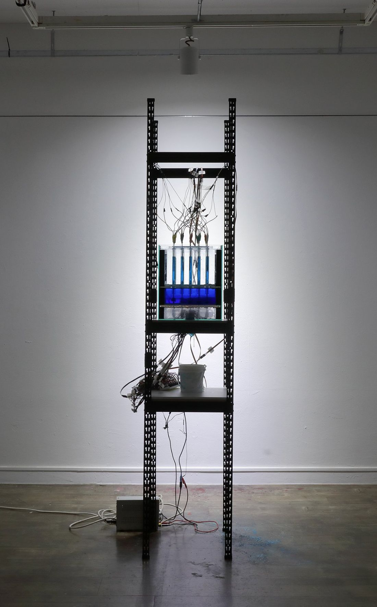
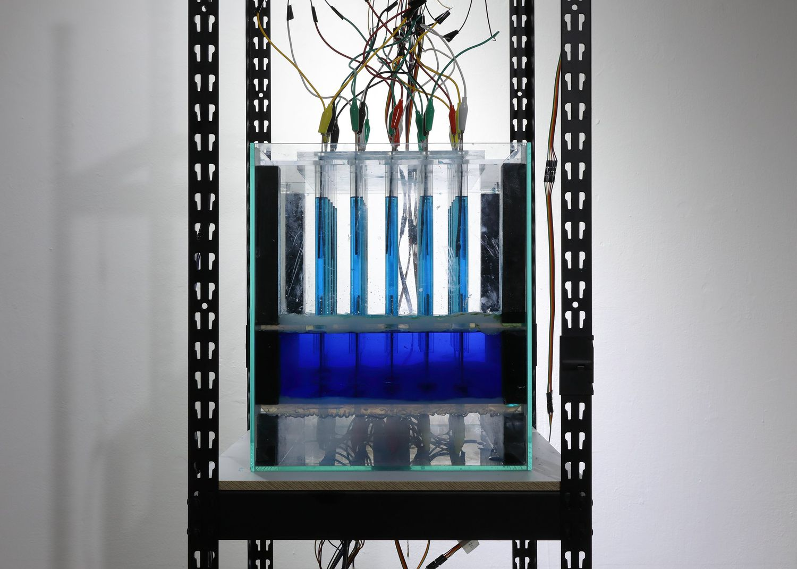
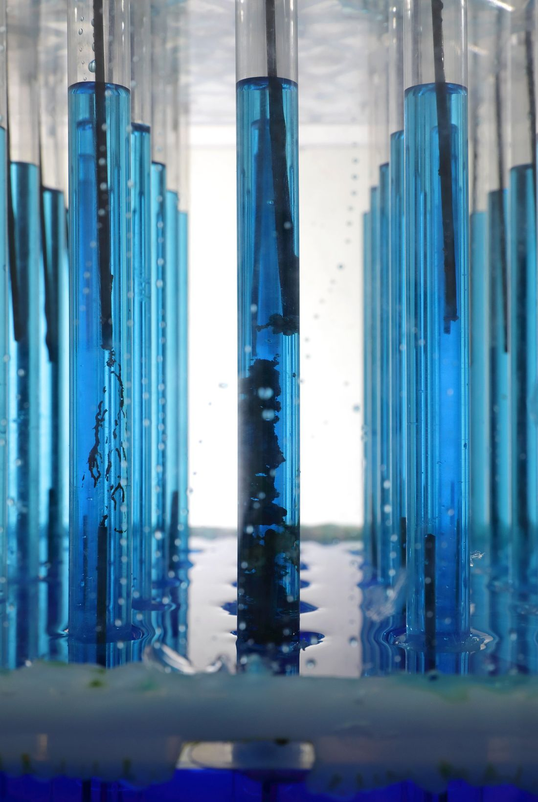

01Now
Which neurons are working this hour
—
Demand, last full hour
—
neurons working
—
Forecast, the hour after
working neuron (size = activation)
silent neuron (activation 0)
input pushing a neuron up
input pushing it down
neuron's share of the forecast
Each working neuron becomes current in its own cell
The Arduino Mega runs the cells one at a time, N00 to N24, each for its pulse time. Shown here at real speed, repeating.
02The code, this hour
One cycle, step by step
Every step below ran with the numbers shown. The weights W1, b1, W2, b2 were fixed on 22 September 2026.
03Last 72 hours
Demand and forecast
Each forecast is drawn at the hour it was made for.
Observed demand, NEMA zoneForecast
05The body
25 tubes of copper sulfate
In each tube a copper cathode hangs from above and an anode rises from below. While its neuron's pulse runs, copper leaves the anode and builds up on the cathode, growing down toward the anode.



